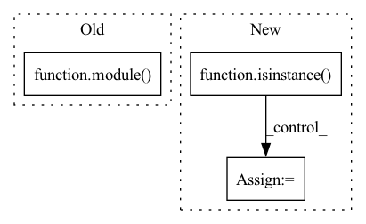

Pattern ID :28152
Before Change
else:
for name, module in block.named_children():
if record:
x = module( x)
od["features." + l + "." + name] = x
elif "features." + l + "." + name == layer_input:
record = True
if record:After Change
record = True
for layer_name, layer in self.features.named_children():
if isinstance( layer, nn.Sequential) :
for block_name, block in layer.named_children():
if record:
x = block(x)
od["features." + layer_name + "." + block_name] = x
if "features." + layer_name + "." + block_name == layer_input:
record = True
elif record:
x = layer(x)
od["features." + layer_name] = x
if "features." + layer_name == layer_input:
record = TrueIn pattern: SUPERPATTERN
Frequency: 3
Non-data size: 3
Instances Fragment ID: 83097440
Project Name: ain-soph/trojanzoo
Commit Name: 1684c28ef38502abb83d37beb845b69007e33274
Time: 2020-07-07
Author: ain-soph@live.com
File Name: trojanzoo/model/image/resnet.py
M Class Name: _ResNet
N Class Name: _ResNet
M Method Name: get_all_layer(3)
N Method Name: get_all_layer(3)
M Parent Class: _ImageModel
N Parent Class: _ImageModel
M File Name: trojanzoo/model/image/resnet.py
N File Name: trojanzoo/model/image/resnet.py
M Start Line: 37
M End Line: 76
N Start Line: 39
N End Line: 76
Before Change
def forward(self, batch):
for i, (key, module) in enumerate(self.layers):
with record_function(key):
batch = module( batch)
assert isinstance(
batch, Data
), f"The return of {module} is not an instance of Data"
return batchAfter Change
_data, _attrs = module(_data, _attrs)
else:
_data, _attrs = jitted_forward(_data, _attrs)
if isinstance( module, Module) :
_data = module.outputKeyMap(_data)
_attrs = module.outputKeyMap(_attrs)
data.update(_data)
attrs.update(_attrs) Fragment ID: 83097447
Project Name: 20171130/equivariant-nn-zoo
Commit Name: 0f5076046a694dc213ba82ae717cc0e0100ff1aa
Time: 2022-07-18
Author: hangruibi@outlook.com
File Name: e3_layers/nn/sequential.py
M Class Name: SequentialGraphNetwork
N Class Name: SequentialGraphNetwork
M Method Name: forward(2)
N Method Name: forward(2)
M Parent Class: torch.nn.Sequential
N Parent Class: torch.nn.Sequential
M File Name: e3_layers/nn/sequential.py
N File Name: e3_layers/nn/sequential.py
M Start Line: 67
M End Line: 71
N Start Line: 72
N End Line: 92
Before Change
pos = conv_pos.pop()
elif module.__name__() == "ConcatFeat":
concat_feat.append(tf.identity(module( feat) ))
elif module.__name__() == "JoinFeat":
feat = module(concat_feat.pop(), feat)
After Change
conv_pos = []
concat_feat = []
for module in self.net:
if isinstance( module, BatchNormBlock) :
feat_list = module(feat_list, training=training)
elif isinstance(module, ReLUBlock):
feat_list = module(feat_list)
elif isinstance(module, ResidualBlock):
feat_list = module(feat_list, pos_list, training=training)
elif isinstance(module, SubmanifoldSparseConv):
feat_list = module(feat_list, pos_list) Fragment ID: 83097444
Project Name: isl-org/open3d-ml
Commit Name: 67123f7e9d5dbbe6a73c42ef648093a7d25ace4a
Time: 2021-05-11
Author: sanskaragrawal107@gmail.com
File Name: ml3d/tf/models/sparseconvnet.py
M Class Name: UNet
N Class Name: UNet
M Method Name: call(4)
N Method Name: call(4)
M Parent Class: tf.keras.layers.Layer
N Parent Class: tf.keras.layers.Layer
M File Name: ml3d/tf/models/sparseconvnet.py
N File Name: ml3d/tf/models/sparseconvnet.py
M Start Line: 397
M End Line: 421
N Start Line: 675
N End Line: 706